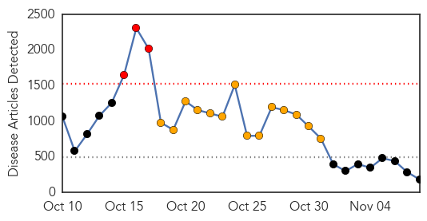
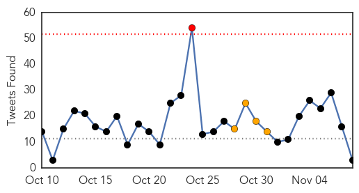
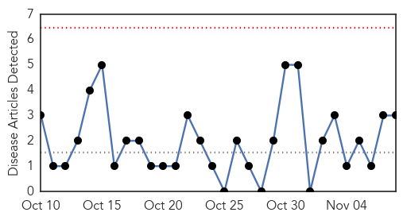

Ebola
30-Day Web Trend
3 alerts, 14 warnings

30-Day Twitter Trend
1 alerts, 4 warnings

Article Locations


Article Confidences
Top Articles:
- 1.000
- Ebola death toll rises to 4,950 - WHO
- 1.000
- MUSC: Pilot with 'flu-like' symptoms is 'no risk' for Ebola
- 1.000
- Relatives of Ebola Patients Criticize Sierra Leone Hospitals
- 1.000
- Dallas marks Ebola end with relief, 'selfies' with President Bush
- 1.000
- Ebola outbreak scare in Dallas ends. Texas clears 177 people monitored for deadly virus
- 1.000
- 1st Ebola case in W. African nation of Mali
- 1.000
- Dallas Marks Ebola End with Relief, Selfies With Bush
- 1.000
- Washoe County Health District monitoring Reno patient for signs of Ebola
- 1.000
- Conflicting Information About How to Contract Ebola; Reason for Worry?
- 1.000
- Dallas marks Ebola end with ‘selfies’ with Bush
- 1.000
- US, Liberia Open 1st Ebola Treatment Unit for Health Workers
- 1.000
- Ebola death toll hits 4,960 - WHO
- 1.000
- Vietnam completes anti-Ebola drill in capital city
- 0.999
- Suspected case of Ebola ruled out in Japan
- 0.999
- Dallas marks end of Ebola monitoring period
- 0.999
- The Manila Times Online
- 0.999
- Decline In Ebola Linked To Burial Practices
- 0.999
- Fábregas: Hysteria runs with Ebola tag
- 0.999
- Trinidad and Tobago's Newsday
- 0.998
- Dallas to End Monitoring for Ebola Infections – WebMD
- 0.998
- How much of Africa is really affected by Ebola?
- 0.998
- NYC Ebola Patient Passing Time in Isolation Playing Banjo: Reports
- 0.998
- Scientists try to predict number of US Ebola cases
- 0.998
- Ebola quotes with Amber Vinson, George W. Bush and Ted Wilbur
- 0.998
- Texas Is Officially Ebola-Free
- 0.997
- Dallas closes the door on its Ebola scare
- 0.997
- Humza Yousaf: Stand up in fight against Ebola
- 0.997
- Texas is now officially clear of Ebola
- 0.997
- Quarantines for Ebola Health Workers Don't Stop the Disease
- 0.997
- Quarantines for Ebola Health Workers Don't Stop the Disease
- 0.997
- Quarantines for Ebola Health Workers Don't Stop the Disease
- 0.997
- Quarantines for Ebola Health Workers Don't Stop the Disease
- 0.997
- US officials unveil plan to test Ebola drugs
- 0.996
- Health care volunteers grapple with Ebola quarantine mandates
- 0.996
- Ebola and infectious disease control: key points for hospitals and health systems
- 0.996
- African businesses raise $32.6 million 'Ebola fighting fund'
- 0.995
- Seven Innovative Technologies Fighting Against Ebola
- 0.995
- Ebola fight starting to pay off – WHO
- 0.995
- Ebola: UN envoy warns against letting guard down, ‘even for a second’
- 0.995
- Ebola outbreak here unlikely
- 0.995
- Amid Ebola disaster, WHO picks new Africa chief
- 0.994
- Missionary quarantined in Charlotte connected to three other Ebo
- 0.994
- Ebola protocol adopted in Perry County
- 0.993
- American nurses head to Liberia to fight Ebola
- 0.993
- Virus warning for Trinity students
- 0.993
- UPDATE: Tests on man in Carmarthen's Glangwili Hospital with suspected Ebola prove negative
- 0.993
- End of Ebola Crisis in Dallas
- 0.993
- Africa sets up $28.5m crisis fund
- 0.993
- Texas college refuses admission on Ebola fear
- 0.993
- Ebola’s Past Can Inform Our Future: Lessons From its Discoverer
Showing top 50 articles...
Top Tweets:
- 0.894
- RT: SierraLeone records 45 new Ebola cases today. All regions returned new infections. Confirmed cases = 4279. Deaths 1126…
- 0.651
- RT: Hard to see obvious effect of slowing in Liberia Ebola virus disease cases. Expect next week will be clearer. http://t.co/S…
- 0.615
- I suspect combination of Ebola & malaria bacterial infections poor nutrition etc. kills more.2/2
Hepatitis
30-Day Web Trend
0 alerts, 0 warnings

30-Day Twitter Trend
0 alerts, 0 warnings

Article Locations

Article Confidences

Top Articles:
- 0.773
- Human relative of Hepatitis A virus found in seals
- 0.651
- OLYSIO® (simeprevir) Gains Additional FDA Approval as Once-Daily, All-Oral Interferon- and Ribavirin-Free Treatment Option in Combination with Sofosbuvir for Adults with Genotype 1 Chronic Hepatitis C
- 0.535
- Janssen Highlights its Hepatitis C Clinical Development Program in Advance of 2014 American... -- BOSTON, Nov. 7, 2014 /PRNewswire/ --
Top Tweets:
-
No tweets found for Nov 08, 2014